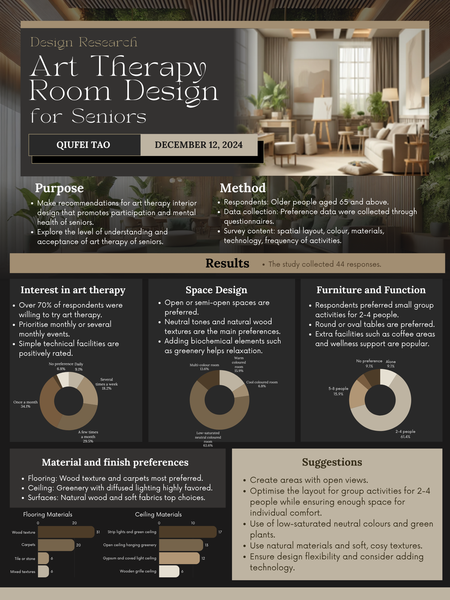
补充调研 · 2024.12
长者艺术疗愈空间设计调研ART THERAPY ROOM DESIGN FOR SENIORS
研究目的与方法
为促进长者参与并支持心理健康，提出艺术疗愈室的室内设计建议；同时了解长者对艺术疗愈的认知与接受程度。研究对象为 65 岁及以上人群，通过问卷收集空间布局、色彩、材料、技术设施及活动频率偏好，共获得 44 份答卷。
主要调研结果
- 参与意愿：超过 70% 的受访者愿意尝试艺术疗愈；活动频率以每月一次（34.1%）及每月数次（29.5%）为主。
- 空间与色彩：开放或半开放布局更受欢迎；低饱和中性色空间占 63.6%，暖色调占 15.9%。绿植被认为有助放松。
- 家具与活动：61.4% 偏好 2–4 人的小组活动；圆桌或椭圆桌较受欢迎，咖啡区及身心健康支持设施也获得认可。
- 材料倾向：木纹地面（31 票）和地毯（20 票）较受青睐；天花绿植与漫射照明、天然木材及柔软织物也受到偏好。
设计建议
保持视线开敞，并以灵活布局兼顾 2–4 人小组活动与个人舒适度；采用低饱和中性色、绿植、天然材料和柔和触感，同时预留适度技术设施的整合空间。
休息厅与社交角
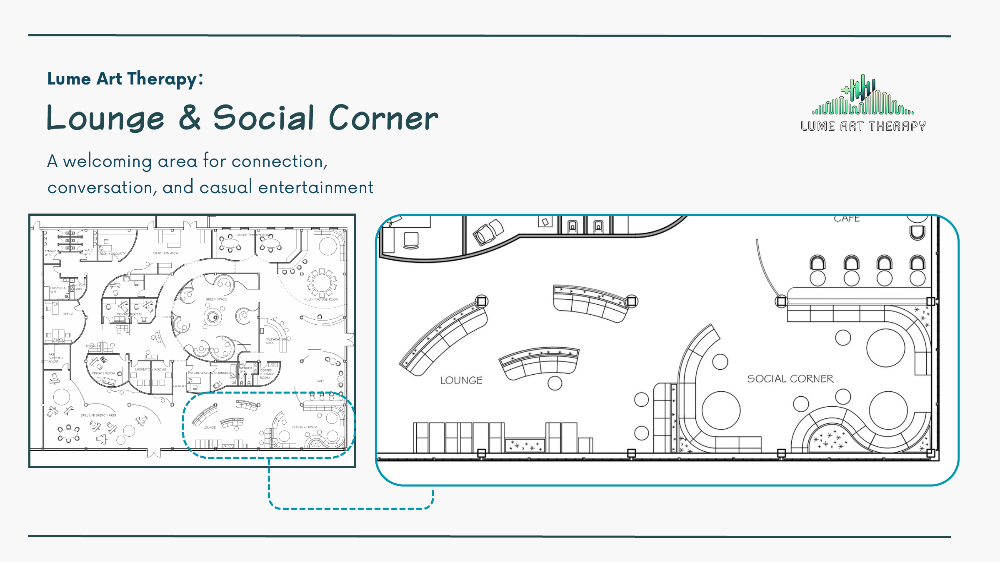
休息厅与社交角LOUNGE & SOCIAL CORNER
平面图中，休息厅与社交角位于空间一侧，以不同尺度的座位和桌面支持独处、交谈及小型聚会。
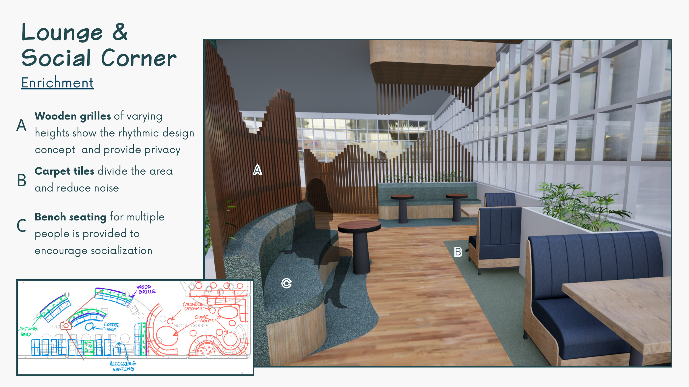
休息厅设计要点ENRICHMENT
手绘标注还包括木格栅、咖啡桌、种植池与无障碍座椅。
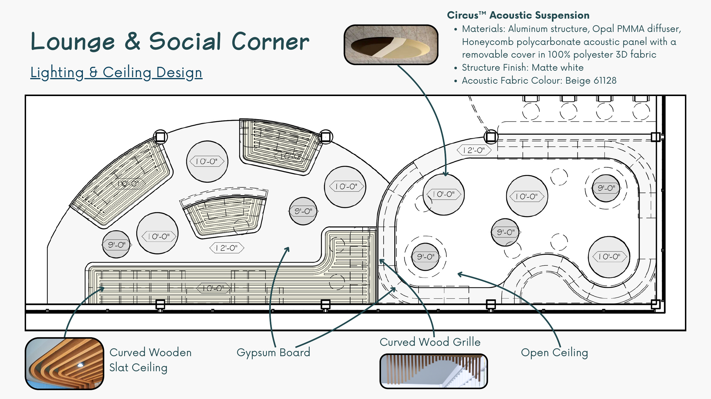
吸音悬吊灯具与天花CIRCUS™ ACOUSTIC SUSPENSION
Circus™ 吸音悬吊灯具：铝制结构、乳白色 PMMA 扩散罩、蜂窝聚碳酸酯吸音板；外覆可拆洗的 100% 聚酯 3D 面料。
天花构件
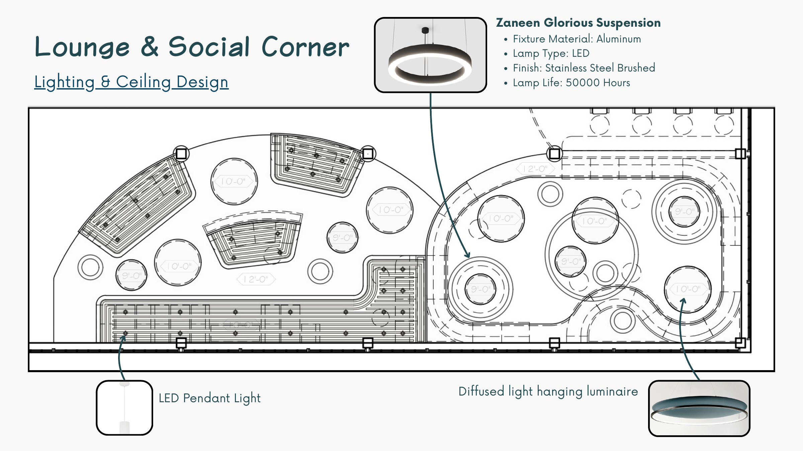
灯具规格LIGHTING & CEILING DESIGN
Zaneen Glorious 吊灯：铝制灯体、LED 光源、拉丝不锈钢饰面，使用寿命约 50,000 小时。
图中灯具：LED 吊灯；漫射光吊灯。
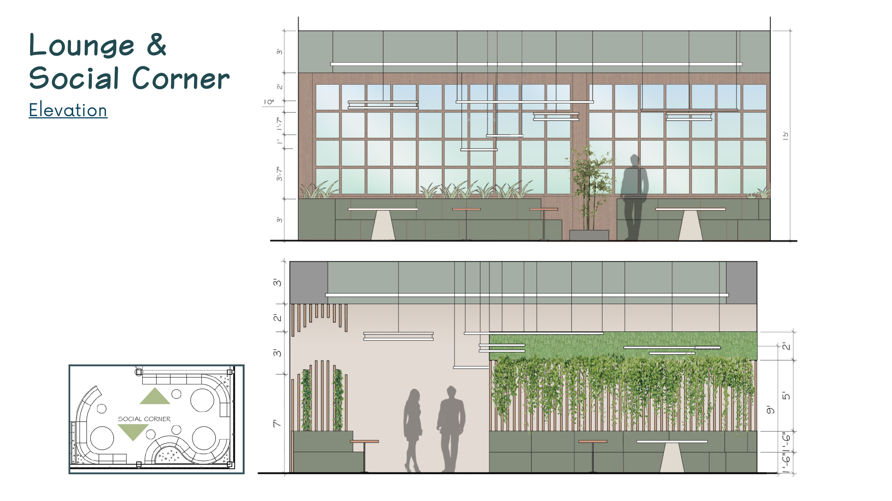
社交角立面ELEVATION
两幅立面图展示社交角的窗边座椅、绿植、桌面与连续窗格；平面小图标示对应区域。
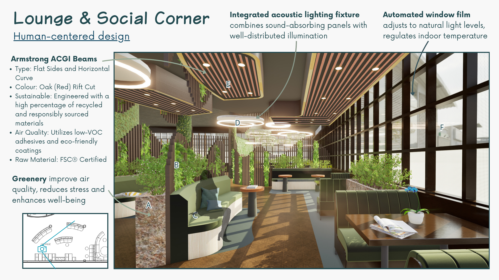
以人为本的设计HUMAN-CENTERED DESIGN
图中标注 A–F 对应：绿植、绿色隔断、座椅、声学照明、木梁系统、自动调光窗膜。
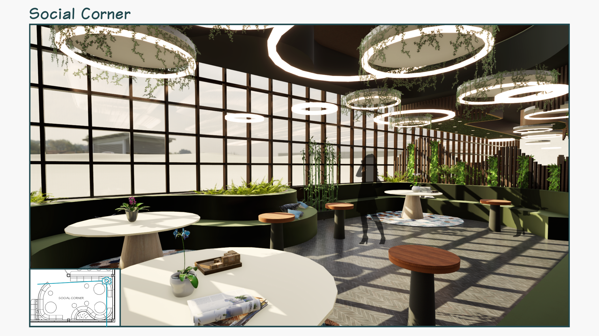
社交角效果图SOCIAL CORNER
弧形座椅沿窗边延展，独立圆桌与大型共享桌形成不同的交流尺度；环形灯具与垂坠绿植呼应。
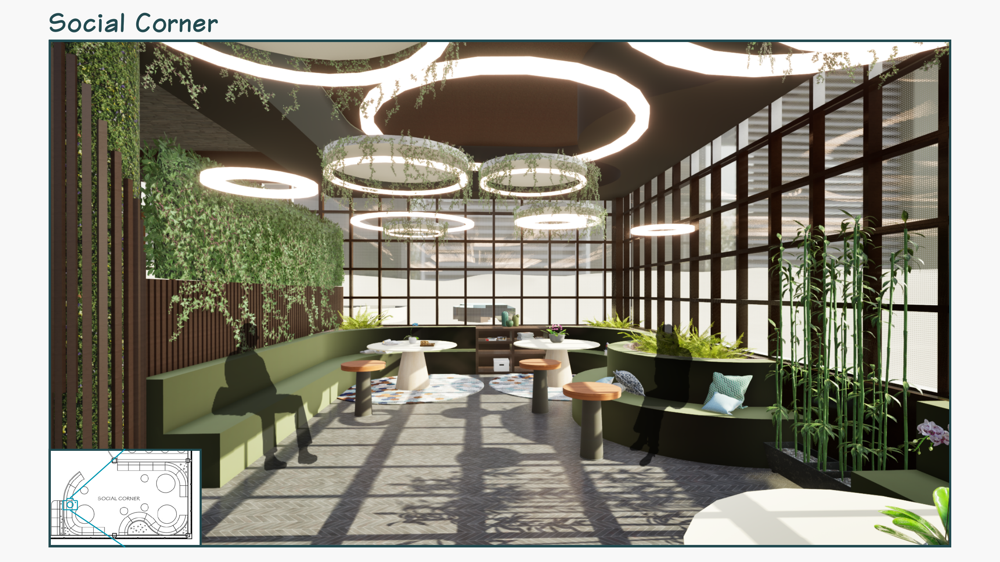
社交角效果图SOCIAL CORNER
木格栅、绿色墙面与窗边座席构成柔和的围合感，中央动线保持开敞。
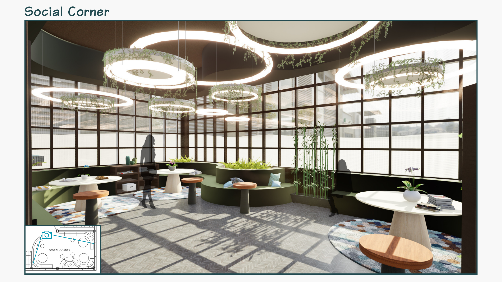
社交角效果图SOCIAL CORNER
整体视角呈现窗边交谈区、绿植、共享桌与不同形式的座位组合。
社交角材料与饰面
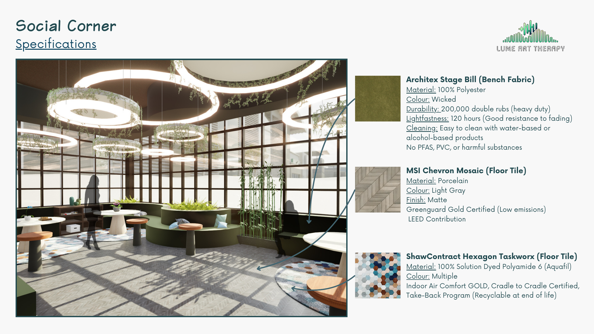
材料规格SOCIAL CORNER / SPECIFICATIONS